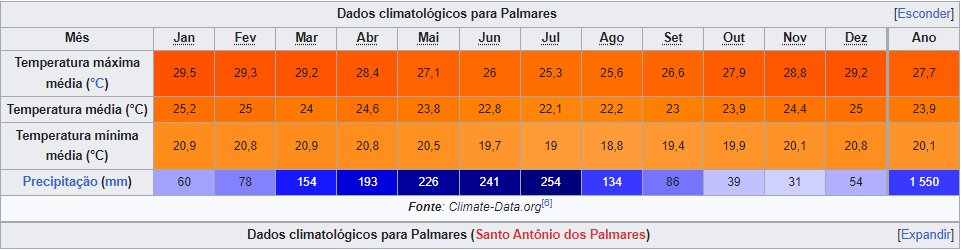

Geográfia
Localiza-se a uma latitude 08º41'00" sul e a uma longitude 35º35'30" oeste, estando a uma altitude de 125 metros. Sua população, conforme estimativas do IBGE de 2021, era de 63 745 habitantes.A sede do município dista 122 km de Recife, a capital do Estado; 105 km de Garanhuns e 123 km de Maceió, a capital do vizinho Estado de Alagoas. Situa-se a 125 metros acima do nível do mar. Limita-se ao norte com o Município do Bonito, a nordeste e leste com Joaquim Nabuco, ao sul com Xexéu, a sudeste com Água Preta e a oeste com Catende.
vegetação e Geologia
O Município insere-se na unidade geoambiental das Superfícies Retrabalhadas. O relevo é, em sua quase totalidade, moldado em rochas do pré-cambriano, predominantemente granito, gnaisses e xistos. A parte sedimentar é representada por argilas variegadas, arenitos e cascalhos. Predomina o latossolo vermelho-amarelo. A topografia, predominantemente ondulada, caracteriza-se por um conjunto de morros e colinas com altitudes não superiores a 120 m e pediplanos resultantes do alargamento do vale do rio Una (Pernambuco) e seus afluentes. Sua flora é composta por restos da vegetação primitiva da Mata Atlântica, algumas espécies arbóreas de alto valor econômico podem ser ainda encontradas testemunhando o que foi a floresta nativa. Entre outras, pode-se detectar a presença da urucuba, louro, ipê amarelo, jatobá, pau-ferro, jacarandá mimoso e rosa, maçaranduba, pau d'arco, oiticica, camaçari rosa e branco, sucupira roxa e branca, etc. O Município dos Palmares faz parte da microrregião homogênea denominada Mata Meridional Pernambucana, contida totalmente na Bacia do Rio Una.
Clima
Segundo dados do Lamepe, a temperatura mínima já registrada em Palmares foi de 14,1 °C, ocorrida no dia 28 de julho de 1923. Já a máxima foi de 38,5 °C, observada em 18 de fevereiro de 2006. O maior acumulado de chuva registrado em 24 horas foi de 235,8 mm, em 3 de maio de 2011.O clima é o tropical, do tipo As', com máximas de 29 °C e mínimas entre 21 °C no verão, e mínimas de 19 °C e máximas entre 26 °C no inverno.
